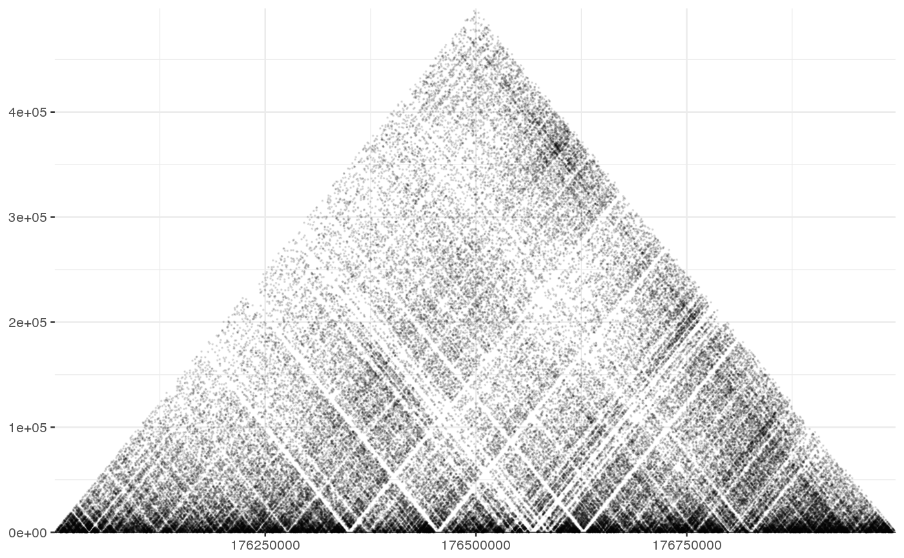

shaman_gplot_map
shaman_gplot_map(points, interval_range = NA, rotate = TRUE, point_size = 0.1, add_axis = TRUE)
| points | A dataframe containing the points (start1, start2). |
|---|---|
| rotate | Binary flag, indicating if the plot should be rotated by 45 degrees. |
| point_size | Cex size of the points in the plot. |
| add_axis | Binary flag, indicating if axis should be added to plot. |
gplot containing the map
Plots hic contact matrix.
#Set misha db to test gsetroot(shaman::shaman_get_test_track_db()) points <- gextract("hic_obs", gintervals.2d(2, 176e06, 177e06, 2, 176e06, 177e06)) shaman_gplot_map(points)